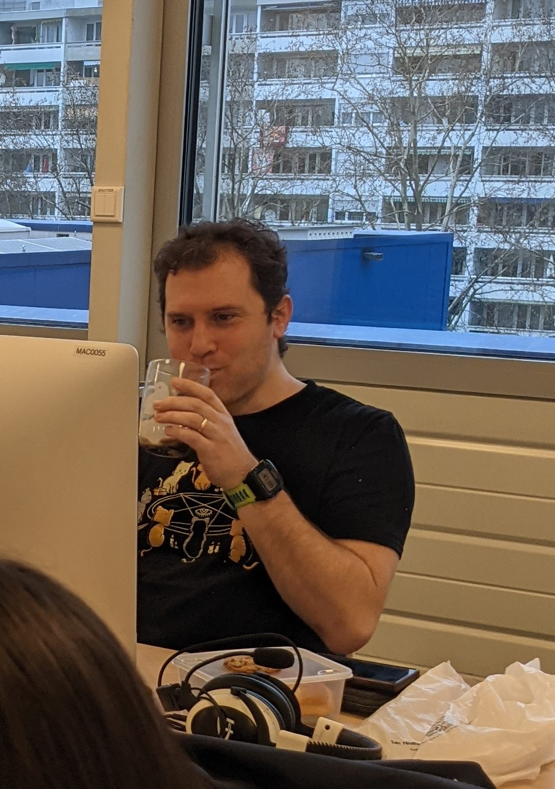
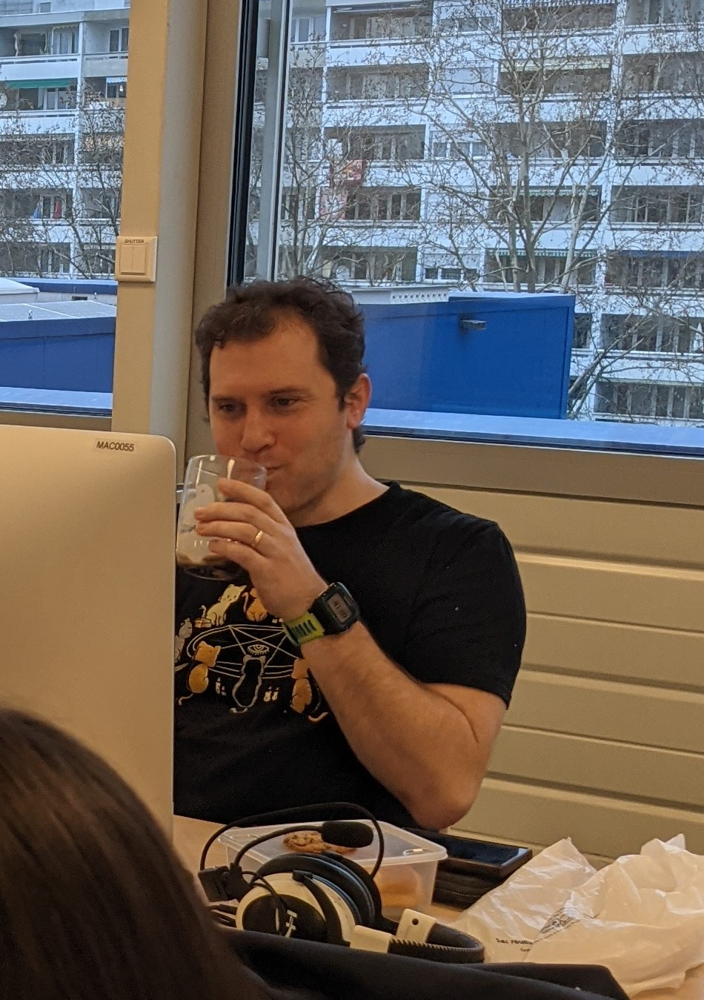

.jpg)


 

Interns at SonarSource
Who we are ?
We are a team of 5 Interns who are doing an internship with in the Sonarsource company
The team brainstorm they idea for the current project
Emma : "So when I came here I wanted to discover the different part of a big society. I also wanted
to understand what's the job of my dad because every time that he tried to explain I had never really understood."
Maelys : "I came for the third time at SonarSource because each time I come I learn more things and love the entreprise more!I know for sure thanks to SonarSource (especially JB) that I want to develop in the future. And here, as in intern, I can see how a developer work and I love the atmosphere here. ^-^ "
Morgane" This is my second year here, I came back to learn more about the code but also to have fun.
Indeed, working with a team like this one and Jean-Baptiste as a mentor is great !"
Thibault : "I came to this stage to learn how developper life is and also to code during my holidays because
I love it so much. I am enjoying this internship so much thanks to J-B, our team and the project we are creating."
Adrien : "I came here because I wanted to learn more about the profession of developer and thanks to a great
mentor I want to study in the middle thank you very much J-B ^^ "
J-B is a sonarsource developer and he is our best mentor during this internship